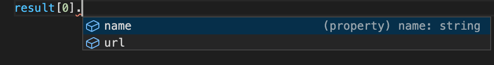
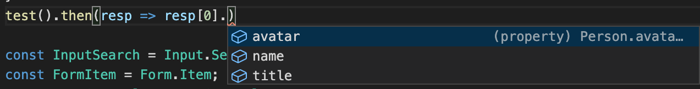

<!doctype html>
<html lang="zh"><head><meta charset="utf-8"><meta name="generator" content="Hexo 4.2.1"><meta name="viewport" content="width=device-width, initial-scale=1, maximum-scale=1"><meta><title>TypeScript高级应用。与最佳实践？ - 宋鑫澍的博客</title><meta description="本文结合实际场景来讲解 TS 高级类型在实际场景中的使用"><meta property="og:type" content="blog"><meta property="og:title" content="TypeScript高级应用。与最佳实践？"><meta property="og:url" content="http://yoursite.com/2020/07/10/TypeScript%E9%AB%98%E7%BA%A7%E5%BA%94%E7%94%A8%E3%80%82%E4%B8%8E%E6%9C%80%E4%BD%B3%E5%AE%9E%E8%B7%B5%EF%BC%9F/"><meta property="og:site_name" content="宋鑫澍的博客"><meta property="og:description" content="本文结合实际场景来讲解 TS 高级类型在实际场景中的使用"><meta property="og:locale" content="zh_CN"><meta property="og:image" content="http://yoursite.com/2020/07/10/TypeScript%E9%AB%98%E7%BA%A7%E5%BA%94%E7%94%A8%E3%80%82%E4%B8%8E%E6%9C%80%E4%BD%B3%E5%AE%9E%E8%B7%B5%EF%BC%9F/1.png"><meta property="og:image" content="http://yoursite.com/2020/07/10/TypeScript%E9%AB%98%E7%BA%A7%E5%BA%94%E7%94%A8%E3%80%82%E4%B8%8E%E6%9C%80%E4%BD%B3%E5%AE%9E%E8%B7%B5%EF%BC%9F/2.png"><meta property="article:published_time" content="2020-07-10T01:58:35.000Z"><meta property="article:modified_time" content="2020-07-15T02:41:23.672Z"><meta property="article:author" content="sxs"><meta property="article:tag" content="前端开发"><meta property="twitter:card" content="summary"><meta property="twitter:image" content="./1.png"><script type="application/ld+json">{"@context":"https://schema.org","@type":"BlogPosting","mainEntityOfPage":{"@type":"WebPage","@id":"http://yoursite.com/2020/07/10/TypeScript%E9%AB%98%E7%BA%A7%E5%BA%94%E7%94%A8%E3%80%82%E4%B8%8E%E6%9C%80%E4%BD%B3%E5%AE%9E%E8%B7%B5%EF%BC%9F/"},"headline":"宋鑫澍的博客","image":["http://yoursite.com/2020/07/10/TypeScript%E9%AB%98%E7%BA%A7%E5%BA%94%E7%94%A8%E3%80%82%E4%B8%8E%E6%9C%80%E4%BD%B3%E5%AE%9E%E8%B7%B5%EF%BC%9F/1.png","http://yoursite.com/2020/07/10/TypeScript%E9%AB%98%E7%BA%A7%E5%BA%94%E7%94%A8%E3%80%82%E4%B8%8E%E6%9C%80%E4%BD%B3%E5%AE%9E%E8%B7%B5%EF%BC%9F/2.png"],"datePublished":"2020-07-10T01:58:35.000Z","dateModified":"2020-07-15T02:41:23.672Z","author":{"@type":"Person","name":"sxs"},"description":"本文结合实际场景来讲解 TS 高级类型在实际场景中的使用"}</script><link rel="canonical" href="http://yoursite.com/2020/07/10/TypeScript%E9%AB%98%E7%BA%A7%E5%BA%94%E7%94%A8%E3%80%82%E4%B8%8E%E6%9C%80%E4%BD%B3%E5%AE%9E%E8%B7%B5%EF%BC%9F/"><link rel="icon" href="/img/favicon.svg"><link rel="stylesheet" href="https://use.fontawesome.com/releases/v5.12.0/css/all.css"><link rel="stylesheet" href="https://cdn.jsdelivr.net/npm/highlight.js@9.12.0/styles/monokai.css"><link rel="stylesheet" href="https://fonts.googleapis.com/css2?family=Ubuntu:wght@400;600&amp;family=Source+Code+Pro"><link rel="stylesheet" href="/css/default.css"><style>body>.footer,body>.navbar,body>.section{opacity:0}</style><!--!--><!--!--><script src="//busuanzi.ibruce.info/busuanzi/2.3/busuanzi.pure.mini.js" defer></script><!--!--><link rel="stylesheet" href="https://cdn.jsdelivr.net/npm/lightgallery@1.6.8/dist/css/lightgallery.min.css"><link rel="stylesheet" href="https://cdn.jsdelivr.net/npm/justifiedGallery@3.7.0/dist/css/justifiedGallery.min.css"><!--!--><!--!--><script src="https://cdn.jsdelivr.net/npm/pace-js@1.0.2/pace.min.js"></script></head><body class="is-2-column"><nav class="navbar navbar-main"><div class="container"><div class="navbar-brand justify-content-center"><a class="navbar-item navbar-logo" href="/"></a></div><div class="navbar-menu"><div class="navbar-start"><a class="navbar-item" href="/">Home</a><a class="navbar-item" href="/archives">Archives</a><a class="navbar-item" href="/categories">Categories</a><a class="navbar-item" href="/tags">Tags</a><a class="navbar-item" href="/about">About</a></div><div class="navbar-end"><a class="navbar-item" target="_blank" rel="noopener" title="Download on GitHub" href="https://github.com/ppoffice/hexo-theme-icarus"><i class="fab fa-github"></i></a><a class="navbar-item search" title="搜索" href="javascript:;"><i class="fas fa-search"></i></a></div></div></div></nav><section class="section"><div class="container"><div class="columns"><div class="column order-2 column-main is-8-tablet is-8-desktop is-8-widescreen"><div class="card"><article class="card-content article" role="article"><div class="article-meta size-small is-uppercase level is-mobile"><div class="level-left"><time class="level-item" dateTime="2020-07-10T01:58:35.000Z" title="2020-07-10T01:58:35.000Z">2020-07-10</time><span class="level-item">7 分钟 读完 (大约 1071 个字)</span><span class="level-item" id="busuanzi_container_page_pv"><i class="far fa-eye"></i>&nbsp;&nbsp;<span id="busuanzi_value_page_pv">0</span>次访问</span></div></div><h1 class="title is-3 is-size-4-mobile">TypeScript高级应用。与最佳实践？</h1><div class="content"><p>本文结合实际场景来讲解 TS 高级类型在实际场景中的使用</p>
<a id="more"></a>

<h2 id="本文讲解-TS-高级类型在实际场景中的使用"><a href="#本文讲解-TS-高级类型在实际场景中的使用" class="headerlink" title="本文讲解 TS 高级类型在实际场景中的使用"></a><strong>本文讲解 TS 高级类型在实际场景中的使用</strong></h2> <br/>

<p>TS 类型系统可分为基本类型与复合类型</p>
<h4 id="基本类型"><a href="#基本类型" class="headerlink" title="基本类型"></a><strong>基本类型</strong></h4><p>基本类型，也可以理解为原子类型。包括 number、boolean、string、null、undefined、function、array、字面量（true，false，1，2，‘a’）等。它们无法再细分。</p>
<h4 id="复合类型"><a href="#复合类型" class="headerlink" title="复合类型"></a><strong>复合类型</strong></h4><p>TypeScript 的复合类型可以分为两类：set 和 map。set 是指一个无序的、无重复元素的集合。而 map 则和 JS 中的对象一样，是一些没有重复键的键值对。</p>
<figure class="highlight plain"><table><tr><td class="code"><pre><span class="line">&#x2F;&#x2F; set</span><br><span class="line">type Size &#x3D; &#39;small&#39; | &#39;default&#39; | &#39;big&#39; | &#39;large&#39;;</span><br><span class="line">&#x2F;&#x2F; map</span><br><span class="line">interface IA &#123;</span><br><span class="line">    a: string</span><br><span class="line">    b: number</span><br><span class="line">&#125;</span><br></pre></td></tr></table></figure>

<br />

<p>TS 中还支持一些类型关键字，比如 keyof, typeof, in, extends, infer 等</p>
<ul>
<li>extends 继承类型，支持条件判断，e.g <code>type test&lt;T&gt; = T extends someType ? T : never</code></li>
<li>typeOf 获得一个 JS 变量的推论类型</li>
<li>keyof 获得一个 TS 类型的所有 key 值</li>
<li>in 遍历可枚举 TS 类型，e.g <code>type Obj = { [p in Keys]: any }</code></li>
<li>infer 必须在 extends 条件语句中，表明待推断的类型变量<br><br /></li>
</ul>
<p>TS 中还支持一些操作符，比如 T[K] 等</p>
<ul>
<li>T[K] 索引访问操作符，<code>type test = { a: string, b: number }; test[a] =&gt; string</code></li>
</ul>
<h3 id="TS-高级应用通常会借助复合类型与关键字与操作符的配合-搞清楚它们的用法是熟练使用-TS-高级应用的前提"><a href="#TS-高级应用通常会借助复合类型与关键字与操作符的配合-搞清楚它们的用法是熟练使用-TS-高级应用的前提" class="headerlink" title="TS 高级应用通常会借助复合类型与关键字与操作符的配合, 搞清楚它们的用法是熟练使用 TS 高级应用的前提"></a><strong><span style="color: red">TS 高级应用通常会借助复合类型与关键字与操作符的配合, 搞清楚它们的用法是熟练使用 TS 高级应用的前提</span></strong></h3><h2 id="实战解析"><a href="#实战解析" class="headerlink" title="实战解析"></a>实战解析</h2><br />

<h4 id="例1-前端需要洗从服务端获取的列表数据，只取前端需要的字段"><a href="#例1-前端需要洗从服务端获取的列表数据，只取前端需要的字段" class="headerlink" title="例1 前端需要洗从服务端获取的列表数据，只取前端需要的字段"></a><strong>例1 前端需要洗从服务端获取的列表数据，只取前端需要的字段</strong></h4><figure class="highlight plain"><table><tr><td class="code"><pre><span class="line">type dataObj &#x3D; &#123;</span><br><span class="line">    name: string</span><br><span class="line">    url: string</span><br><span class="line">    price: number</span><br><span class="line">    location: string</span><br><span class="line">&#125;</span><br><span class="line"></span><br><span class="line">&#x2F;&#x2F; 获得子类型</span><br><span class="line">type FilterKeys&lt;T, K extends keyof T&gt; &#x3D; &#123; [Key in K]: T[Key] &#125;</span><br><span class="line"></span><br><span class="line"></span><br><span class="line">function getData&lt;T, K extends keyof T&gt;(list: Array&lt;T&gt;, keys: Array&lt;K&gt;): FilterKeys&lt;T, K&gt;[] &#123;</span><br><span class="line">    const result &#x3D; []</span><br><span class="line">    list.forEach(item &#x3D;&gt; &#123;</span><br><span class="line">        const obj: any &#x3D; &#123;&#125;</span><br><span class="line">        keys.forEach((key: any) &#x3D;&gt; (obj[key] &#x3D; item[key]))</span><br><span class="line">        result.push(obj)</span><br><span class="line">    &#125;)</span><br><span class="line"></span><br><span class="line">    return result</span><br><span class="line">&#125;</span><br><span class="line"></span><br><span class="line">const list: dataObj[] &#x3D; [&#123; name: &quot;name&quot;, url: &quot;url&quot;, price: 22, location: &quot;location&quot; &#125;]</span><br><span class="line">&#x2F;&#x2F; 取 name url 字段</span><br><span class="line">const result &#x3D; getData&lt;dataObj, &quot;name&quot; | &quot;url&quot;&gt;(list, [&quot;name&quot;, &quot;url&quot;])</span><br></pre></td></tr></table></figure>
<p></p>
<ul>
<li>FilterKeys 也可以用 TS 内置的类型 Pick 替代</li>
<li>getData 方法的类型标注通过泛型 + extends + keyof + in + 索引访问操作符来完成<br />
<br />

</li>
</ul>
<h4 id="例2-获得-Promise-返回值的类型"><a href="#例2-获得-Promise-返回值的类型" class="headerlink" title="例2 获得 Promise 返回值的类型"></a><strong>例2 获得 Promise 返回值的类型</strong></h4><figure class="highlight plain"><table><tr><td class="code"><pre><span class="line">&#x2F;&#x2F; somePackage</span><br><span class="line">interface Person &#123;</span><br><span class="line">  title: string</span><br><span class="line">  avatar: string</span><br><span class="line">&#125;</span><br><span class="line"></span><br><span class="line">export const somefunc &#x3D; async function() &#123;</span><br><span class="line">  return &#123; title: &quot;22&quot;, avatar: &quot;http:&#x2F;&#x2F;&quot; &#125; as Person</span><br><span class="line">&#125;</span><br><span class="line"></span><br><span class="line">&#x2F;&#x2F; file2.js</span><br><span class="line">import &#123; somefunc &#125; from &#39;somePackage&#39;</span><br><span class="line"></span><br><span class="line">type PromiseType&lt;T&gt; &#x3D; (args: any[]) &#x3D;&gt; Promise&lt;T&gt;;</span><br><span class="line">&#x2F;&#x2F; infer 等于一个变量，在类型推导的时候才会赋值</span><br><span class="line">type UnPromisify&lt;T&gt; &#x3D; T extends PromiseType&lt;infer U&gt; ? U : never;</span><br><span class="line">type UnArray&lt;T&gt; &#x3D; T extends Array&lt;infer U&gt; ? U : never;</span><br><span class="line"></span><br><span class="line">async function test() &#123;</span><br><span class="line">    const resp &#x3D; await somefunc()</span><br><span class="line">    type resp_type &#x3D; UnArray&lt;UnPromisify&lt;typeof somefunc&gt;&gt;</span><br><span class="line">    </span><br><span class="line">    resp &#x3D; resp.map(item &#x3D;&gt; (&#123;</span><br><span class="line">        ...item,</span><br><span class="line">        name: &quot;name&quot;</span><br><span class="line">    &#125;))</span><br><span class="line"></span><br><span class="line">    return resp as (Array&lt;resp_obj_type &amp; &#123; name: string &#125;&gt;)</span><br><span class="line">&#125;</span><br></pre></td></tr></table></figure>
<p><br>somePackage 输出了 async 函数但是没有输出返回值的类型<br>test 的返回值不加类型标注的话，TS 无法知道又添加了 name 字段<br>UnPromisify 与 UnArray 通过泛型 + never + infer + typeof 来实现<br><br /></p>
<h4 id="例3-已知-React-组件的-props-类型，获取类型中所有-value-的-type-function-的子类型"><a href="#例3-已知-React-组件的-props-类型，获取类型中所有-value-的-type-function-的子类型" class="headerlink" title="例3 已知 React 组件的 props 类型，获取类型中所有 value 的 type == function 的子类型"></a><strong>例3 已知 React 组件的 props 类型，获取类型中所有 value 的 type == function 的子类型</strong></h4><figure class="highlight plain"><table><tr><td class="code"><pre><span class="line">interface someProps &#123;</span><br><span class="line">    prop1: string</span><br><span class="line">    prop2: number</span><br><span class="line">    prop3: () &#x3D;&gt; void</span><br><span class="line">    prop4: (e: someEvent) &#x3D;&gt; void    </span><br><span class="line">&#125;</span><br><span class="line"></span><br><span class="line">type getConditionType&lt;T, Condition&gt; &#x3D; Pick&lt;T, &#123; [K in keyof T]: T[K] extends Condition ? K : never&#125;[keyof T]&gt;</span><br><span class="line"></span><br><span class="line">&#x2F;&#x2F; someProps 只包含 function 类型的子类型</span><br><span class="line">type someProps_function_type &#x3D; getConditionType&lt;someProps, Function&gt;</span><br></pre></td></tr></table></figure>
<p>利用了索引访问操作符会忽略 never 类型的特性，e.g</p>
<figure class="highlight plain"><table><tr><td class="code"><pre><span class="line">type A &#123; </span><br><span class="line">    a: number; </span><br><span class="line">    b: &#39;b&#39;; </span><br><span class="line">    c: never </span><br><span class="line">&#125;;</span><br><span class="line">type B &#x3D; keyof A; </span><br><span class="line">type C &#x3D; A[B];</span><br><span class="line">&#x2F;&#x2F; 等于 number | &quot;b&quot; | never, 联合类型会忽略 never</span><br><span class="line">type C &#x3D;&gt; number | &quot;b&quot;, 这里 never 去除了</span><br></pre></td></tr></table></figure>
<p>getConditionType 通过泛型 + never + keyof + extends + Pick + 联合类型忽略 never 的特性实现<br><br /></p>
<h4 id="例4-已知-React-组件的-props-类型-T，获得去除成员-K-的子类型"><a href="#例4-已知-React-组件的-props-类型-T，获得去除成员-K-的子类型" class="headerlink" title="例4 已知 React 组件的 props 类型 T，获得去除成员 K 的子类型"></a><strong>例4 已知 React 组件的 props 类型 T，获得去除成员 K 的子类型</strong></h4><figure class="highlight plain"><table><tr><td class="code"><pre><span class="line">interface someProps &#123;</span><br><span class="line">    prop1: string</span><br><span class="line">    prop2: number</span><br><span class="line">    prop3: () &#x3D;&gt; void</span><br><span class="line">    prop4: (e: someEvent) &#x3D;&gt; void    </span><br><span class="line">&#125;</span><br><span class="line"></span><br><span class="line">type Exclude&lt;T, U&gt; &#x3D; T extends U ? never : T;</span><br><span class="line">type Omit&lt;T, K extends keyof any&gt; &#x3D; Pick&lt;T, Exclude&lt;keyof T, K&gt;&gt;;</span><br><span class="line"></span><br><span class="line">&#x2F;&#x2F; 只包含 prop2 与 prop4 成员</span><br><span class="line">type test &#x3D; Omit&lt;someProps, &quot;prop1&quot; | &quot;prop3&quot;&gt;</span><br></pre></td></tr></table></figure>
<p>Exclude 和 Omit 已被 TS 原生支持<br>Exclude 里 T 与 U 均为联合类型，T extends U 的机制是 T 的每个子类型与 U 进行比较<br>Omit 通过 extends + 联合类型忽略 never + keyof<br><strong>另外一种实现方法如下:</strong></p>
<figure class="highlight plain"><table><tr><td class="code"><pre><span class="line">type Diff&lt;T extends keyof any, U extends keyof any&gt; &#x3D; (&#123; [P in T]: P &#125; &amp; &#123; [P in U]: never &#125;)[T];</span><br><span class="line">type Omit&lt;T, K extends keyof T&gt; &#x3D; Pick&lt;T, Diff&lt;keyof T, K&gt;&gt;;</span><br></pre></td></tr></table></figure>
<p>keyof any == string | number | symbol，只用 K extends string TS 会报错，因为不能确定 keyof T 得到的联合类型中全部是 string<br><strong><span style="color: red">还是 TS 内置的 Omit 实现更为优雅</span></strong></p>
<h2 id="总结"><a href="#总结" class="headerlink" title="总结"></a>总结</h2><p><strong>熟练掌握高级类型的使用，是通向 TS 高级应用的最优途径</strong></p>
</div><div class="article-tags size-small mb-4"><span class="mr-2">#</span><a class="link-muted mr-2" rel="tag" href="/tags/%E5%89%8D%E7%AB%AF%E5%BC%80%E5%8F%91/">前端开发</a></div><!--!--></article></div><!--!--><nav class="post-navigation mt-4 level is-mobile"><div class="level-start"><a class="article-nav-prev level level-item link-muted" href="/2020/07/15/eggjs-serverless-%E8%85%BE%E8%AE%AF%E4%BA%91%E9%83%A8%E7%BD%B2%E5%8E%9F%E7%90%86%E5%88%86%E6%9E%90/"><i class="level-item fas fa-chevron-left"></i><span class="level-item">eggjs serverless 腾讯云部署原理分析</span></a></div><div class="level-end"><a class="article-nav-next level level-item link-muted" href="/2020/06/23/SCF%20Serverless%20%E8%85%BE%E8%AE%AF%E4%BA%91%E9%83%A8%E7%BD%B2%E5%8E%9F%E7%90%86%E5%88%86%E6%9E%90/"><span class="level-item">SCF Serverless 腾讯云部署原理分析</span><i class="level-item fas fa-chevron-right"></i></a></div></nav><!--!--></div><div class="column column-left is-4-tablet is-4-desktop is-4-widescreen  order-1"><div class="card widget"><div class="card-content"><nav class="level"><div class="level-item has-text-centered flex-shrink-1"><div><figure class="image is-128x128 mx-auto mb-2"></figure><p class="title is-size-4 is-block line-height-inherit">SXS</p><p class="is-size-6 is-block">day day up</p><p class="is-size-6 is-flex justify-content-center"><i class="fas fa-map-marker-alt mr-1"></i><span>上海</span></p></div></div></nav><nav class="level is-mobile"><div class="level-item has-text-centered is-marginless"><div><p class="heading">文章</p><a href="/archives"><p class="title">6</p></a></div></div><div class="level-item has-text-centered is-marginless"><div><p class="heading">分类</p><a href="/categories"><p class="title">0</p></a></div></div><div class="level-item has-text-centered is-marginless"><div><p class="heading">标签</p><a href="/tags"><p class="title">2</p></a></div></div></nav><div class="level"><a class="level-item button is-primary is-rounded" href="https://github.com/ppoffice" target="_blank" rel="noopener">关注我</a></div><div class="level is-mobile"><a class="level-item button is-transparent is-marginless" target="_blank" rel="noopener" title="Github" href="https://github.com/Sxs7513"><i class="fab fa-github"></i></a></div></div></div><!--!--><div class="card widget"><div class="card-content"><div class="menu"><h3 class="menu-label">链接</h3><ul class="menu-list"><li><a class="level is-mobile is-mobile" href="https://hexo.io" target="_blank" rel="noopener"><span class="level-left"><span class="level-item">Hexo</span></span><span class="level-right"><span class="level-item tag">hexo.io</span></span></a></li><li><a class="level is-mobile is-mobile" href="https://bulma.io" target="_blank" rel="noopener"><span class="level-left"><span class="level-item">Bulma</span></span><span class="level-right"><span class="level-item tag">bulma.io</span></span></a></li></ul></div></div></div><!--!--><div class="card widget"><div class="card-content"><h3 class="menu-label">最新文章</h3><article class="media"><div class="media-content size-small"><p><time dateTime="2020-07-16T04:46:45.000Z">2020-07-16</time></p><p class="title is-6"><a class="link-muted" href="/2020/07/16/%E8%A7%A3%E5%86%B3-install-%E6%97%B6-yarn-%E5%92%8C-npm-%E6%B7%B7%E7%94%A8%E7%9A%84%E9%97%AE%E9%A2%98/">解决 install 时 yarn 和 npm 混用的问题</a></p><p class="is-uppercase"></p></div></article><article class="media"><div class="media-content size-small"><p><time dateTime="2020-07-15T02:46:22.000Z">2020-07-15</time></p><p class="title is-6"><a class="link-muted" href="/2020/07/15/eggjs-serverless-%E8%85%BE%E8%AE%AF%E4%BA%91%E9%83%A8%E7%BD%B2%E5%8E%9F%E7%90%86%E5%88%86%E6%9E%90/">eggjs serverless 腾讯云部署原理分析</a></p><p class="is-uppercase"></p></div></article><article class="media"><div class="media-content size-small"><p><time dateTime="2020-07-10T01:58:35.000Z">2020-07-10</time></p><p class="title is-6"><a class="link-muted" href="/2020/07/10/TypeScript%E9%AB%98%E7%BA%A7%E5%BA%94%E7%94%A8%E3%80%82%E4%B8%8E%E6%9C%80%E4%BD%B3%E5%AE%9E%E8%B7%B5%EF%BC%9F/">TypeScript高级应用。与最佳实践？</a></p><p class="is-uppercase"></p></div></article><article class="media"><div class="media-content size-small"><p><time dateTime="2020-06-23T12:58:35.000Z">2020-06-23</time></p><p class="title is-6"><a class="link-muted" href="/2020/06/23/SCF%20Serverless%20%E8%85%BE%E8%AE%AF%E4%BA%91%E9%83%A8%E7%BD%B2%E5%8E%9F%E7%90%86%E5%88%86%E6%9E%90/">SCF Serverless 腾讯云部署原理分析</a></p><p class="is-uppercase"></p></div></article><article class="media"><div class="media-content size-small"><p><time dateTime="2020-06-16T11:31:50.000Z">2020-06-16</time></p><p class="title is-6"><a class="link-muted" href="/2020/06/16/hexo-serverless%20%E8%85%BE%E8%AE%AF%E4%BA%91%E9%83%A8%E7%BD%B2%E5%8E%9F%E7%90%86%E5%88%86%E6%9E%90/">Hexo Serverless 腾讯云部署原理分析</a></p><p class="is-uppercase"></p></div></article></div></div><div class="card widget"><div class="card-content"><div class="menu"><h3 class="menu-label">归档</h3><ul class="menu-list"><li><a class="level is-mobile is-marginless" href="/archives/2020/07/"><span class="level-start"><span class="level-item">七月 2020</span></span><span class="level-end"><span class="level-item tag">3</span></span></a></li><li><a class="level is-mobile is-marginless" href="/archives/2020/06/"><span class="level-start"><span class="level-item">六月 2020</span></span><span class="level-end"><span class="level-item tag">3</span></span></a></li></ul></div></div></div><div class="card widget"><div class="card-content"><div class="menu"><h3 class="menu-label">标签</h3><div class="field is-grouped is-grouped-multiline"><div class="control"><a class="tags has-addons" href="/tags/%E5%89%8D%E7%AB%AF%E5%BC%80%E5%8F%91/"><span class="tag">前端开发</span><span class="tag is-grey-lightest">2</span></a></div><div class="control"><a class="tags has-addons" href="/tags/%E5%89%8D%E7%AB%AF%E5%BC%80%E5%8F%91-serverless/"><span class="tag">前端开发 serverless</span><span class="tag is-grey-lightest">3</span></a></div></div></div></div></div><div class="card widget"><div class="card-content"><div class="menu"><h3 class="menu-label">订阅更新</h3><form action="https://feedburner.google.com/fb/a/mailverify" method="post" target="popupwindow" onsubmit="window.open(&#039;https://feedburner.google.com/fb/a/mailverify?uri=&#039;,&#039;popupwindow&#039;,&#039;scrollbars=yes,width=550,height=520&#039;);return true"><input type="hidden" value="" name="uri"><input type="hidden" name="loc" value="en_US"><div class="field has-addons"><div class="control has-icons-left is-expanded"><input class="input" name="email" type="email" placeholder="Email"><span class="icon is-small is-left"><i class="fas fa-envelope"></i></span></div><div class="control"><input class="button is-primary" type="submit" value="订阅"></div></div></form></div></div></div><div class="card widget"><div class="card-content"><div class="notification is-danger">You need to set <code>client_id</code> and <code>slot_id</code> to show this AD unit. Please set it in <code>_config.yml</code>.</div></div></div></div><!--!--></div></div></section><footer class="footer"><div class="container"><div class="level"><div class="level-start"><a class="footer-logo is-block mb-2" href="/"></a><p class="size-small"><span>&copy; 2020 sxs</span>  Powered by <a href="https://hexo.io/" target="_blank" rel="noopener">Hexo</a> &amp; <a href="https://github.com/ppoffice/hexo-theme-icarus" target="_blank" rel="noopener">Icarus</a><br><span id="busuanzi_container_site_uv">共<span id="busuanzi_value_site_uv">0</span>个访客</span></p></div><div class="level-end"><div class="field has-addons"><p class="control"><a class="button is-transparent is-large" target="_blank" rel="noopener" title="Creative Commons" href="https://creativecommons.org/"><i class="fab fa-creative-commons"></i></a></p><p class="control"><a class="button is-transparent is-large" target="_blank" rel="noopener" title="Attribution 4.0 International" href="https://creativecommons.org/licenses/by/4.0/"><i class="fab fa-creative-commons-by"></i></a></p><p class="control"><a class="button is-transparent is-large" target="_blank" rel="noopener" title="Download on GitHub" href="https://github.com/ppoffice/hexo-theme-icarus"><i class="fab fa-github"></i></a></p></div></div></div></div></footer><script src="https://cdn.jsdelivr.net/npm/jquery@3.3.1/dist/jquery.min.js"></script><script src="https://cdn.jsdelivr.net/npm/moment@2.22.2/min/moment-with-locales.min.js"></script><script>moment.locale("zh-CN");</script><script>var IcarusThemeSettings = {
            site: {
                url: 'http://yoursite.com',
                external_link: {"enable":true,"exclude":[]}
            },
            article: {
                highlight: {
                    clipboard: true,
                    fold: 'unfolded'
                }
            }
        };</script><script src="https://cdn.jsdelivr.net/npm/clipboard@2.0.4/dist/clipboard.min.js" defer></script><script src="/js/animation.js"></script><a id="back-to-top" title="回到顶端" href="javascript:;"><i class="fas fa-chevron-up"></i></a><script src="/js/back_to_top.js" defer></script><!--!--><!--!--><!--!--><script src="https://cdn.jsdelivr.net/npm/lightgallery@1.6.8/dist/js/lightgallery.min.js" defer></script><script src="https://cdn.jsdelivr.net/npm/justifiedGallery@3.7.0/dist/js/jquery.justifiedGallery.min.js" defer></script><script>window.addEventListener("load", () => {
            if (typeof $.fn.lightGallery === 'function') {
                $('.article').lightGallery({ selector: '.gallery-item' });
            }
            if (typeof $.fn.justifiedGallery === 'function') {
                if ($('.justified-gallery > p > .gallery-item').length) {
                    $('.justified-gallery > p > .gallery-item').unwrap();
                }
                $('.justified-gallery').justifiedGallery();
            }
        });</script><!--!--><!--!--><!--!--><script src="/js/main.js" defer></script><div class="searchbox"><div class="searchbox-container"><div class="searchbox-header"><div class="searchbox-input-container"><input class="searchbox-input" type="text" placeholder="想要查找什么..."></div><a class="searchbox-close" href="javascript:;">×</a></div><div class="searchbox-body"></div></div></div><script src="/js/insight.js" defer></script><script>document.addEventListener('DOMContentLoaded', function () {
            loadInsight({"contentUrl":"/content.json"}, {"hint":"想要查找什么...","untitled":"(无标题)","posts":"文章","pages":"页面","categories":"分类","tags":"标签"});
        });</script></body></html>